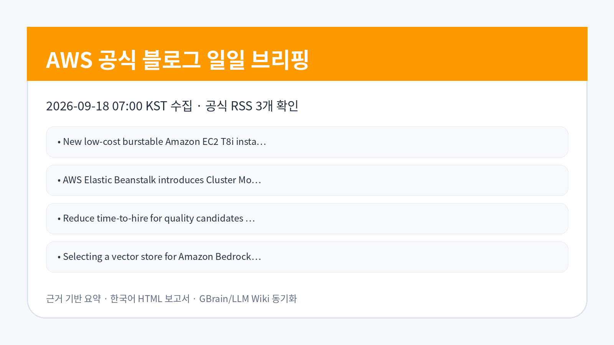
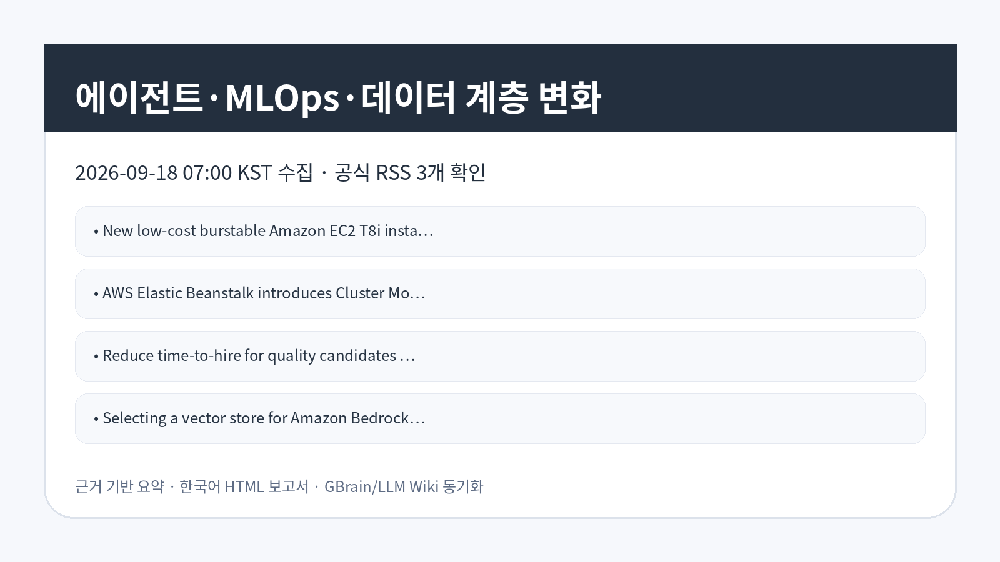

AI/ML · AWS 공식 블로그
Wood Mackenzie의 Amazon Bedrock AgentCore 기반 공유 에이전트 플랫폼 구축 사례
Wood Mackenzie가 Amazon Bedrock AgentCore 위에 공통 에이전트 플랫폼을 구성한 사례입니다.
검토 포인트: 여러 팀이 공통 에이전트 기반을 공유할 때 재사용성과 중앙 통제, 팀별 실험 속도의 균형을 검토해야 합니다.
원문 보기이번 실행에서 확인한 AWS 공식 블로그 글을 raw 저장, LLM Wiki 동기화, GBrain 파일 저장 후 기업 적용 관점으로 재구성했습니다.

이번 수집에서는 Amazon Bedrock AgentCore 기반 공유 에이전트 플랫폼, Amazon Quick의 MCP 권한 설계, Bedrock Knowledge Bases 벡터 저장소 선택, SageMaker AI 합성 데이터, Elastic Beanstalk와 EC2 인프라 업데이트가 함께 확인됐습니다. 공통적으로 에이전트 도구 권한, 지식 검색 저장소, AI 학습 데이터, 실행 인프라를 각각 별도 통제 지점으로 검토해야 한다는 점이 드러납니다.
AI/ML · AWS 공식 블로그
Wood Mackenzie가 Amazon Bedrock AgentCore 위에 공통 에이전트 플랫폼을 구성한 사례입니다.
검토 포인트: 여러 팀이 공통 에이전트 기반을 공유할 때 재사용성과 중앙 통제, 팀별 실험 속도의 균형을 검토해야 합니다.
원문 보기AI/ML · AWS 공식 블로그
Bedrock Knowledge Bases에서 벡터 저장소를 선택할 때 성능, 운영, 비용, 통합 조건을 비교하는 기준을 제시합니다.
검토 포인트: RAG 저장소 선택은 검색 품질뿐 아니라 확장성, 보안, 운영 도구, 비용 예측성을 포함해 판단해야 합니다.
원문 보기Compute · AWS 공식 블로그
MCP 도구 호출에 세분화된 권한 확인을 적용해 에이전트형 업무 자동화의 접근통제 경계를 강화하는 내용입니다.
검토 포인트: 에이전트가 도구를 호출하는 업무에서는 사용자 권한, 도구별 정책, 감사 로그를 분리해 검증해야 합니다.
원문 보기AI/ML · AWS 공식 블로그
산업 안전 AI 학습에서 실제 위험 장면 데이터 부족을 합성 데이터로 보완하는 SageMaker AI 활용 패턴입니다.
검토 포인트: 안전 AI는 희소 사고 데이터 보완 효과와 합성 데이터의 현실 대표성 검증을 동시에 요구합니다.
원문 보기AI/ML · AWS 공식 블로그
금융 서비스 환경에서 사용자가 직접 활용할 수 있는 AI 에이전트를 보안 통제와 함께 제공한 사례입니다.
검토 포인트: 규제 산업의 셀프서비스 AI는 편의성보다 데이터 접근권한, 승인 흐름, 결과 감사 가능성이 우선 검토 항목입니다.
원문 보기Compute · AWS 공식 블로그
Wood Mackenzie가 Amazon Bedrock AgentCore 위에 공통 에이전트 플랫폼을 구성한 사례입니다.
검토 포인트: 여러 팀이 공통 에이전트 기반을 공유할 때 재사용성과 중앙 통제, 팀별 실험 속도의 균형을 검토해야 합니다.
원문 보기Compute · AWS 공식 블로그
Wood Mackenzie가 Amazon Bedrock AgentCore 위에 공통 에이전트 플랫폼을 구성한 사례입니다.
검토 포인트: 여러 팀이 공통 에이전트 기반을 공유할 때 재사용성과 중앙 통제, 팀별 실험 속도의 균형을 검토해야 합니다.
원문 보기AI/ML · AWS 공식 블로그
채용 후보자 선별과 접점 관리에 AI 기반 Amazon Connect Talent를 적용해 채용 리드타임을 줄이는 접근입니다.
검토 포인트: HR 데이터와 AI 자동화를 연결할 때 편향, 설명가능성, 후보자 개인정보 처리 기준을 함께 검토해야 합니다.
원문 보기Compute · AWS 공식 블로그
Wood Mackenzie가 Amazon Bedrock AgentCore 위에 공통 에이전트 플랫폼을 구성한 사례입니다.
검토 포인트: 여러 팀이 공통 에이전트 기반을 공유할 때 재사용성과 중앙 통제, 팀별 실험 속도의 균형을 검토해야 합니다.
원문 보기| 기사 | 게시 | 카테고리 |
|---|---|---|
| Wood Mackenzie의 Amazon Bedrock AgentCore 기반 공유 에이전트 플랫폼 구축 사례 | 2026-09-18 | AI/ML |
| Amazon Bedrock Knowledge Bases용 벡터 저장소 선택 기준 | 2026-09-18 | AI/ML |
| Amazon Quick의 MCP 도구 권한을 심층 방어 방식으로 설계하는 방법 | 2026-09-18 | Compute |
| Amazon SageMaker AI 합성 데이터로 산업 안전 AI를 고도화하는 방법 | 2026-09-18 | AI/ML |
| MRH Trowe의 금융 서비스 보안 셀프서비스 AI 에이전트 구현 사례 | 2026-09-18 | AI/ML |
| AWS Elastic Beanstalk의 클러스터 모드 도입 | 2026-09-18 | Compute |
| 저비용 버스터블 Amazon EC2 T8i 인스턴스 정식 출시 | 2026-09-18 | Compute |
| AI 기반 Amazon Connect Talent로 우수 후보자 채용 시간을 줄이는 방법 | 2026-09-18 | AI/ML |
| Amazon QuickSight 기반 서버리스 Git 지표 대시보드 구축 방법 | 2026-09-18 | Compute |
에이전트 플랫폼과 MCP 도구 권한 글은 업무 자동화가 늘어날수록 도구 호출 권한과 감사 가능성이 설계 핵심이 된다는 점을 보여줍니다. 벡터 저장소 선택과 합성 데이터 활용 글은 AI 품질이 모델 자체보다 검색 기반 데이터 계층과 학습 데이터 준비 방식에 크게 좌우될 수 있음을 시사합니다.
기업은 개별 서비스 도입 전 워크로드별 기준을 먼저 세워야 합니다. 에이전트는 도구 권한과 승인 흐름, RAG는 벡터 저장소의 성능·비용·보안, 산업 안전 AI는 합성 데이터의 대표성, 인프라는 비용 절감과 성능 안정성의 균형을 분리해 검토하는 것이 안전합니다.
국내 기업이 참고할 부분은 금융 서비스 보안 셀프서비스, 산업 안전 AI, 개발 지표 대시보드처럼 업무 도메인과 통제 요구가 분명한 사례입니다. 다만 각 사례의 데이터 위치, 개인정보 처리, 권한 설계, 비용 구조는 조직별 보안·감사 기준에 맞춰 별도 확인이 필요합니다.
AI 에이전트와 MCP 도구를 연결하는 경우 사용자 권한, 도구별 정책, 승인 로그, 실패 시 차단 기준이 필요합니다. RAG와 합성 데이터 활용은 검색 품질·데이터 대표성·출처 추적을 확인해야 하며, 개발 지표 시각화는 개인 평가로 오용되지 않도록 목적과 접근 권한을 명확히 해야 합니다.
관찰된 사실: Wood Mackenzie가 Amazon Bedrock AgentCore 위에 공통 에이전트 플랫폼을 구성한 사례입니다.
기업 의사결정 시사점/리스크/기회: 여러 팀이 공통 에이전트 기반을 공유할 때 재사용성과 중앙 통제, 팀별 실험 속도의 균형을 검토해야 합니다.
관찰된 사실: Bedrock Knowledge Bases에서 벡터 저장소를 선택할 때 성능, 운영, 비용, 통합 조건을 비교하는 기준을 제시합니다.
기업 의사결정 시사점/리스크/기회: RAG 저장소 선택은 검색 품질뿐 아니라 확장성, 보안, 운영 도구, 비용 예측성을 포함해 판단해야 합니다.
관찰된 사실: MCP 도구 호출에 세분화된 권한 확인을 적용해 에이전트형 업무 자동화의 접근통제 경계를 강화하는 내용입니다.
기업 의사결정 시사점/리스크/기회: 에이전트가 도구를 호출하는 업무에서는 사용자 권한, 도구별 정책, 감사 로그를 분리해 검증해야 합니다.
관찰된 사실: 산업 안전 AI 학습에서 실제 위험 장면 데이터 부족을 합성 데이터로 보완하는 SageMaker AI 활용 패턴입니다.
기업 의사결정 시사점/리스크/기회: 안전 AI는 희소 사고 데이터 보완 효과와 합성 데이터의 현실 대표성 검증을 동시에 요구합니다.
관찰된 사실: 금융 서비스 환경에서 사용자가 직접 활용할 수 있는 AI 에이전트를 보안 통제와 함께 제공한 사례입니다.
기업 의사결정 시사점/리스크/기회: 규제 산업의 셀프서비스 AI는 편의성보다 데이터 접근권한, 승인 흐름, 결과 감사 가능성이 우선 검토 항목입니다.


Image Prompt 1: AWS 공식 블로그 신규 수집 현황을 한국어 기업 브리핑 스타일로 요약하는 카드형 시각 자료.
Image Prompt 2: 에이전트 권한, RAG 저장소, 합성 데이터, 인프라 비용 최적화를 연결한 기업 기술 변화 시각 자료.
Image Prompt 3: 의사결정자가 확인해야 할 보안, 비용, 품질, 운영 책임 포인트를 보여주는 한국어 인포그래픽.